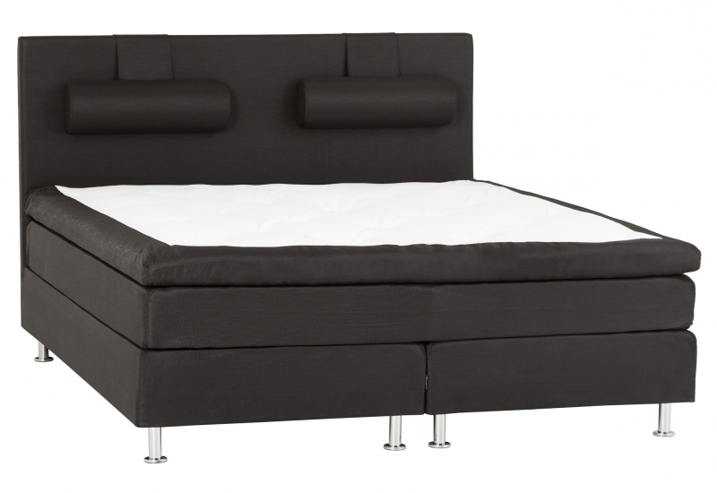

Hästens säng
Kickstarta dagen med en riktigt bra nattsömn. Med den komfort och kvalitet du får från våra robusta enkelsängar så kan du vakna fräsch och utvilad. Vill du utnyttja din yta optimalt, välj en säng med inbyggd förvaring eller en som har plats för sänglådor under sängen. Och vi har också allt annat, som madrasser och duntäcken, som kan göra din enkelsäng komplett.